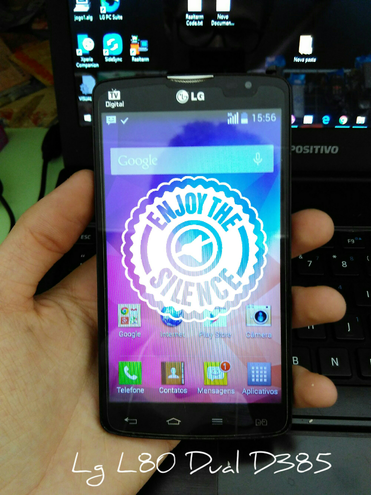
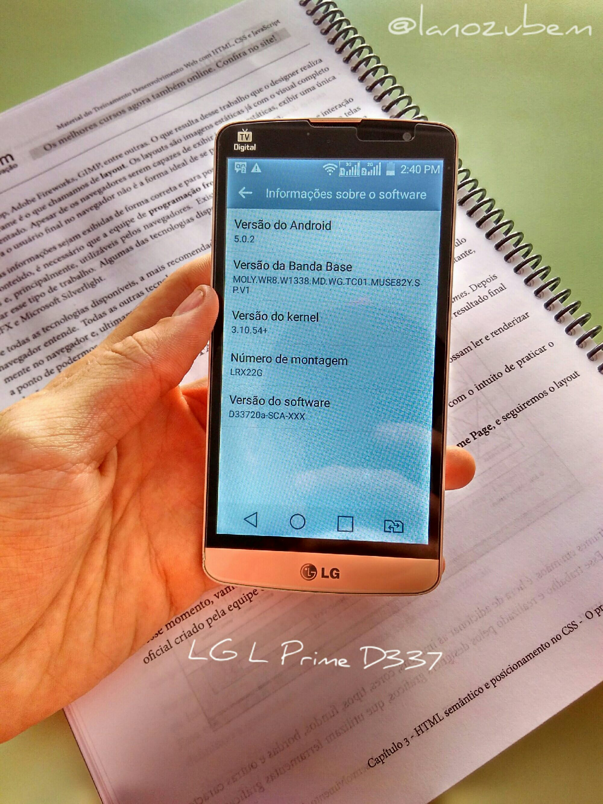
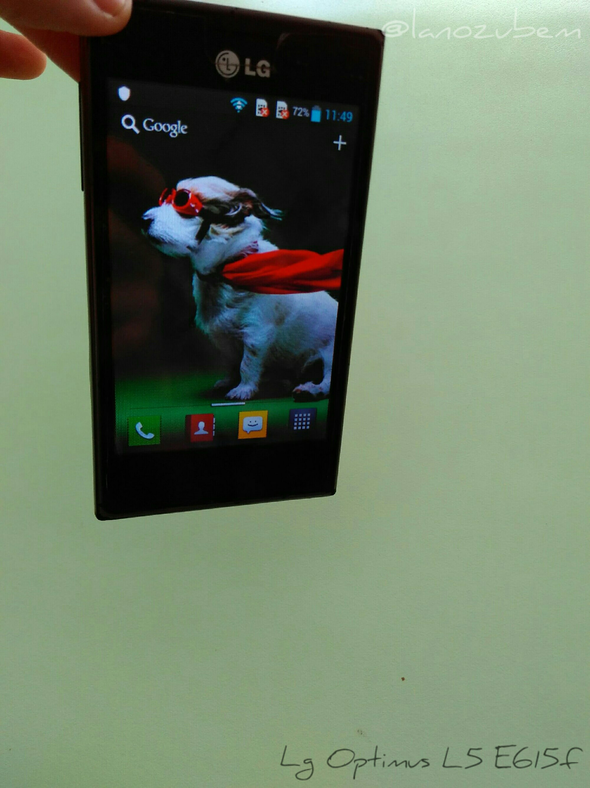
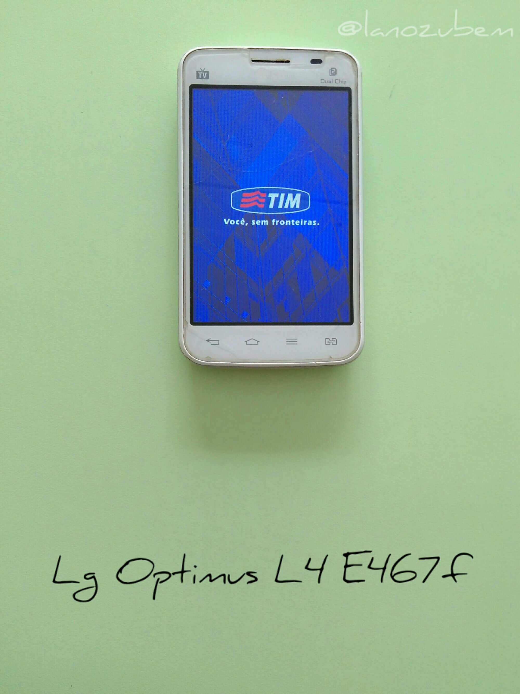
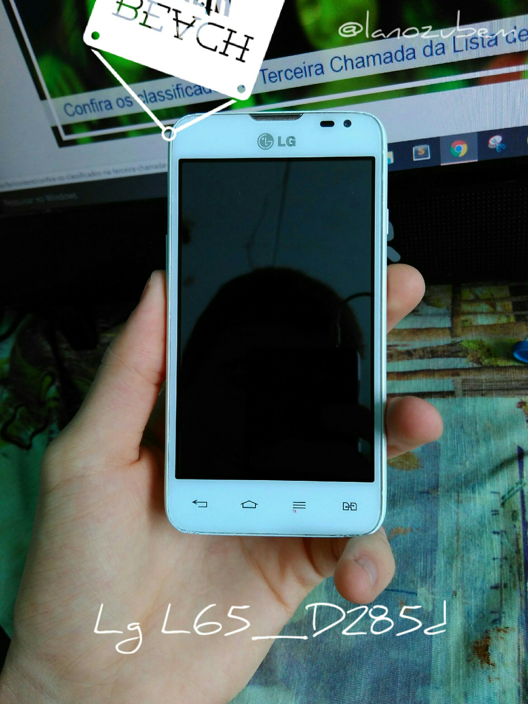
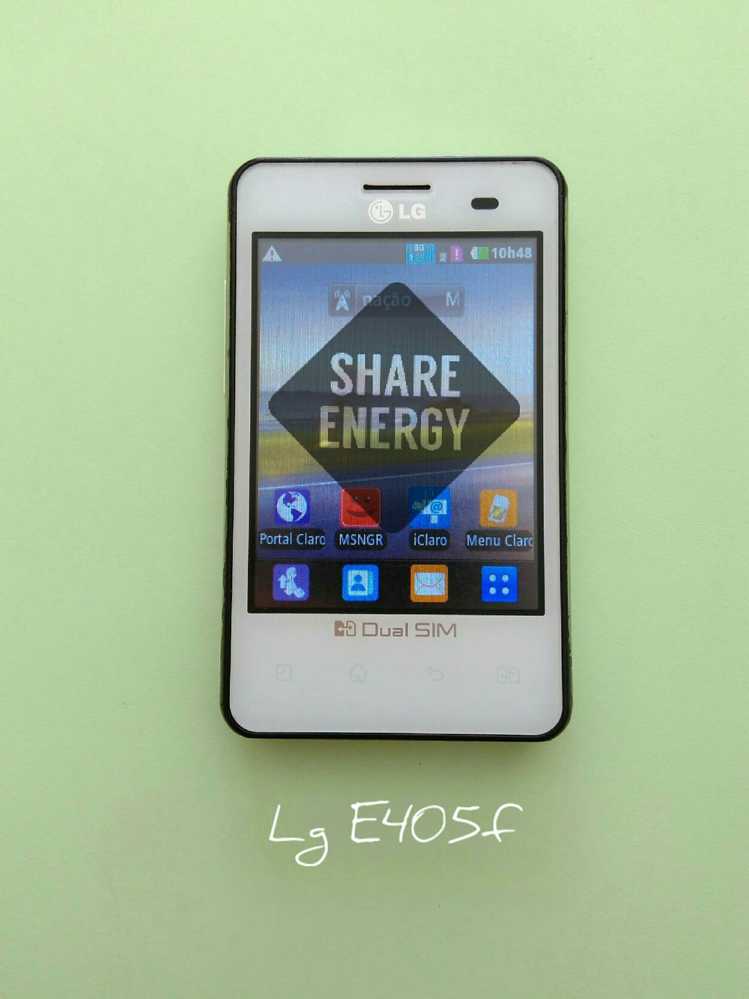
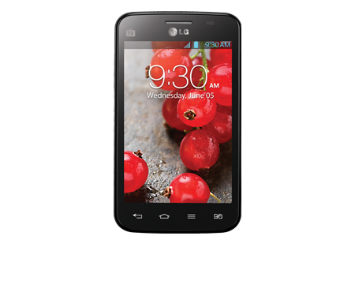
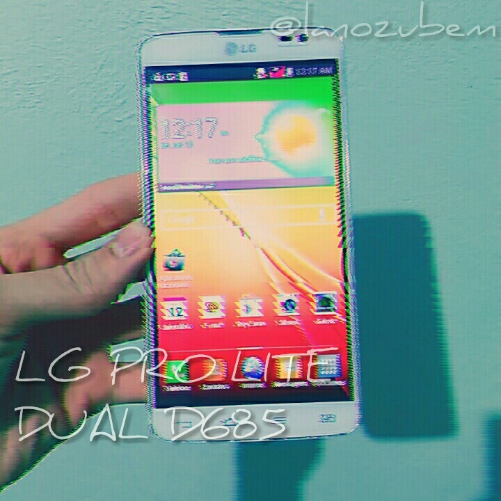
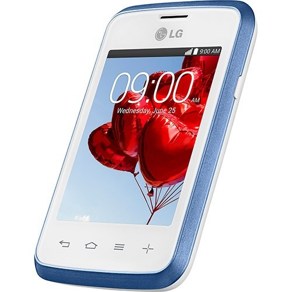
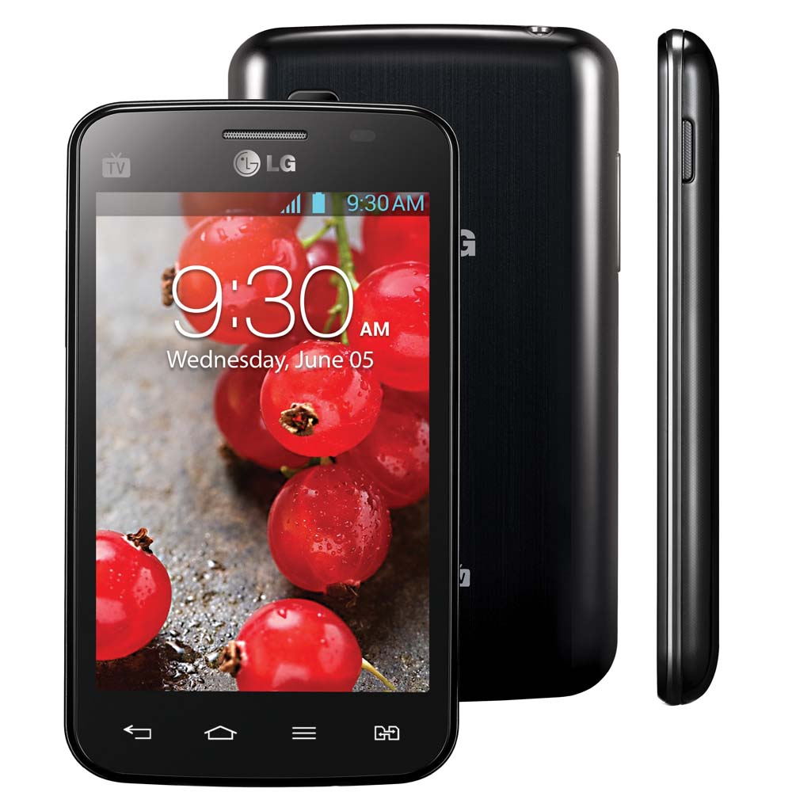

Pra que quebrar cabeça se o Hard reset LG está aqui
- Outros |
- Hard_reset |
- LG
Para agilizar pressione a tecla F3 e ensira o modelo.
-
Hard Reset para o Lg K130F K4

Remoção do bloqueio de tela do LG K4 -
Hard Reset Lg G2 Lite D295F

Remoção do bloqueio de tela do Lg G2 lite -
Hard Reset para o Lg L80 D385
Remoção do bloqueio de tela para Lg L80 -
Hard Reset para o Lg L30 D125F

Remoção do bloqueio de tela para o Lg L30 -
Hard Reset para o Lg H222T TV

Remoção do bloqueio de tela do LG JOY -
Hard Reset para o Lg L Prime D337
Remoção do bloqueio de tela do Lg L Prime -
Hard Reset LG L70 D325f

Remoção do bloqueio de tela do Lg L70 -
Hard Reset LG L35 D157F

Remoção do bloqueio de tela do Optimus L35 -
Hard Reset LG L7 II P716

Remoção do bloqueio de tela do LG L7 II -
Hard Reset LG Optimus L5 E615F
Remoção do bloqueio de tela do Optimus L5 -
Hard Reset LG Optimus L4 II E467F
Remoção do bloqueio de tela do Optimus L4 -
Hard Reset para o Lg L65 D285F
Remoção do bloqueio de tela do Lg L65 -
Hard Reset LG Optimus L3 E405F
Remoção do bloqueio de tela do Optimus L3 -
Hard Reset para o LG L90 D410

Remoção do bloqueio de tela para Lg L90 -
Hard Reset LG Optimus L4 II E465F
Remoção do bloqueio de tela do Optimus L4 TV -
Hard Reset Para o LG Pro Lite Dual D685
Remoção do bloqueio de tela do LG Pro Lite -
Hard Reset para o LG L20 Dual D105F
Remoção do bloqueio de tela LG L20 Dual -
Hard Reset Para o LG L40 D175F
Remoção do bloqueio de tela para o LG L40 -
Hard Reset para o LG L20 Tri Chip D107

Remoção do bloqueio de tela LG L20 Tri Chip -
Hard Reset LG L3 II E435F

Remoção do bloqueio de tela do Optimus L3 II -
Hard Reset LG G3 D855P

Remoção do bloqueio de tela do LG G3 -
Hard Reset Lg optimus L1 E410F
Remoção do bloqueio de tela do Lg Optimus L1 -
Hard Reset para o LG K350DS K8

Remoção do bloqueio de tela do LG K8 -
Hard Reset LG Optimus L4 II Tri Chip E470F
Remoção do bloqueio de tela do Optimus L4 -
Hard Reset para o Lg K430TV K10

Remoção do bloqueio de tela do LG K10